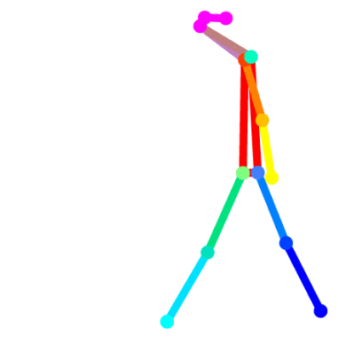
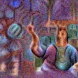
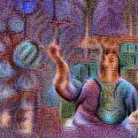

PUBLICATIONS LIST
A full list can be found at my GoogleScholar profile.

Stergiou A., De Weerdt B., and Deligiannis N., Holistic Representation Learning for Multi-Task Trajectory Anomaly Detection
WACV 2024
@inproceedings{stergiou2024holistic,
title={Holistic Representation Learning for Multitask Trajectory Anomaly Detection},
author={Stergiou, Alexandros and De Weerdt , Brent and Deligiannis, Nikos},
booktitle={IEEE/CVF Winter Conference on Applications of Computer Vision (WACV)},
year={2024},
organization={IEEE}}


Stergiou A., and Deligiannis N., Leaping Into Memories: Space-Time Deep Feature Synthesis
ICCV 2023
@inproceedings{stergiou2023leaping,
title={Leaping Into Memories: Space-Time Deep Feature Synthesis},
author={Stergiou, Alexandros and Deligiannis, Nikos},
booktitle={IEEE/CVF International Conference on Computer Vision (ICCV)},
year={2023},
organization={IEEE}}
Stergiou A., and Damen D., The Wisdom of Crowds: Temporal Progressive Attention for Early Action Prediction
CVPR 2023
@inproceedings{stergiou2023wisdom,
title={The Wisdom of Crowds: Temporal Progressive Attention for Early Action Prediction},
author={Stergiou, Alexandros and Damen, Dima},
booktitle={IEEE/CVF Computer Vision and Pattern Recognition (CVPR)},
year={2023}}
Stergiou A., and Damen D., Play It Back: Iterative Attention for Audio Recognition
ICASSP 2023
@inproceedings{stergiou2023playitback,
title={Play It Back: Iterative Attention for Audio Recognition},
author={Stergiou, Alexandros and Damen, Dima},
booktitle={IEEE International Conference on Acoustics, Speech and Signal Processing (ICASSP)},
year={2023}}
organization={IEEE}}
Stergiou A., and Poppe R., AdaPool: Exponential Adaptive Pooling for Information-Retaining Downsampling
IEEE Transactions on Image Processing, 2023
@article{stergiou2023adapool,
author={Stergiou, Alexandros and Poppe, Ronald},
journal={IEEE Transactions on Image Processing},
title={AdaPool: Exponential Adaptive Pooling for Information-Retaining Downsampling},
year={2023},
volume={32},
pages={251-266},
doi={10.1109/TIP.2022.3227503}}
Stergiou A., The Mind's Eye: Visualizing Class Agnostic Features of CNNs,
ICIP 2021
@article{stergiou2021mind,
title = {The Mind's Eye: Visualizing Class-Agnostic Features of CNNs},
author={Stergiou, Alexandros},
booktitle={IEEE International Conference on Image Processing (ICIP)},
year={2021},
organization={IEEE}}
Stergiou A., Poppe R., and Kalliatakis G., Refining activation downsampling with SoftPool
ICCV 2021
@article{stergiou2021refining,
title={Refining activation downsampling with SoftPool},
author={Stergiou, Alexandros and Poppe, Ronald and Kalliatakis, Grigorios},
booktitle={IEEE/CVF International Conference on Computer Vision (ICCV)},
year={2021},
organization={IEEE}}
Stergiou A., and Poppe R., Multi-Temporal Convolutions for Human ActionRecognition in Videos
IJCNN 2021
@article{stergiou2021multi,
title={Multi-Temporal Convolutions for Human Action Recognition in Videos},
author={Stergiou, Alexandros and Poppe, Ronald},
booktitle={IEEE International Joint Conference of Neural Networks (IJCNN)},
year={2021},
organization={IEEE}}
Stergiou A., and Poppe R., Learn to cycle: Time-consistent feature discovery for action recognition
Pattern Recognition Letters, 2021
@article{stergiou2020learn,
title = {Learn to cycle: Time-consistent feature discovery for action recognition},
author={Stergiou, Alexandros and Poppe, Ronald},
journal = {Pattern Recognition Letters},
volume ={141},
pages ={1--7},
year ={2021},
issn ={0167-8655}}
Stergiou A., Kapidis G., Kalliatakis G., Chrysoulas C., Poppe R., and Veltkamp R.C., Class Feature Pyramids for Video Explanation
ICCVw 2019
@article{stergiou2019class,
title={Class Feature Pyramids for Video Explanation},
author={Stergiou, Alexandros and Kapidis, Georgios and Kalliatakis, Grigorios and
Chrysoulas, Christos Poppe, Ronald and Veltkamp, Remco},
booktitle={IEEE Intenrantional Conference on Computer Vision Workshops (ICCVW)},
year={2019},
organization={IEEE}}
Stergiou A., and Poppe R., Spatio-Temporal FAST 3D Convolutions for Human Action Recognition
ICMLA 2019 (Oral)
@article{stergiou2019fast,
title={Spatio-Temporal FAST 3D Convolutions for Human Action Recognition},
author={Stergiou, Alexandros and Poppe, Ronald},
booktitle={IEEE Intenrantional Conference on Machine Learning Applications (ICMLA)},
year={2019},
organization={IEEE}}
Stergiou A., Kapidis G., Kalliatakis G., Chrysoulas C., Veltkamp R.C., and Poppe R., Saliency Tubes: Visual Explanations for Spatio-Temporal Convolutions
ICIP 2019 (Oral)
@article{stergiou2019saliency,
title={Saliency Tubes: Visual Explanations for Spatio-Temporal Convolutions},
author={Stergiou, Alexandros and Kapidis, Georgios and Kalliatakis, Grigorios and
Chrysoulas, Christos and Veltkamp, Remco and Poppe, Ronald},
booktitle={IEEE International Conference on Image Processing (ICIP)},
year={2019},
organization={IEEE}}
Stergiou A., and Poppe R., Analyzing human-to-human interactions: a survey
Computer Vision and Image Understanding, 2019
@article{stergiou2019analyzing,
author = {Stergiou, Alexandros and Poppe, Ronald},
title = {Analyzing human-human interactions: a survey},
journal = {Computer Vision and Image Understanding},
volume = {188},
pages = {102799},
year = {2019},
issn = {1077-3142}}
DATASETS
Inter4K
@article{stergiou2021adapool,
title={AdaPool: Exponential Adaptive Pooling for Information-Retaining Downsampling},
author={Stergiou, Alexandros and Poppe, Ronald},
journal={arXiv preprint},
year={2021}}
THESIS
Stergiou A.G., Efficient Modelling Across Time of Human Actions and Interactions
Utrecht University 2021
@phdthesis{stergiou2021efficient,
title={Efficient Modelling Across Time of Human Actions and Interactions},
author={Stergiou, Alexandros Georgios},
year={2021},
school={Utrecht University}}
TEACHING
Deep Learning (Masters) 2023
Course administrator
INFOMCV -- Computer Vision (Masters) 2018-2020
Guest Lecturer
REVIEWING
Journals: IJCV, TIP, TPAMI, Pattern Recognition
Conferences (Regularly review papers for): BMVC, CVPR, ECCV, ICCV, and WACV
Outstanding Reviewer: ECCV 2022
SUPERVISION
Master students: Marjusa Elezi (VUB, 2023)